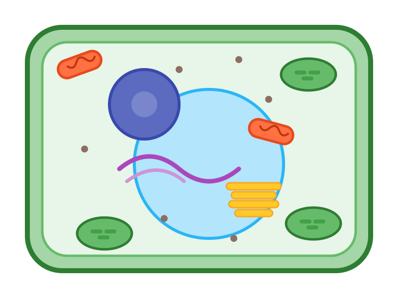
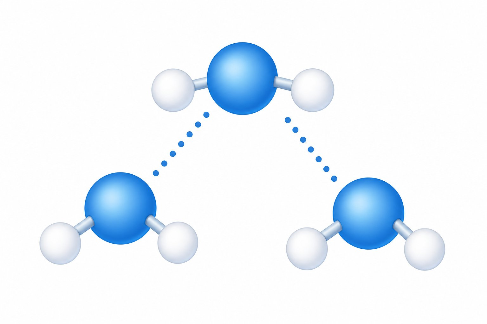
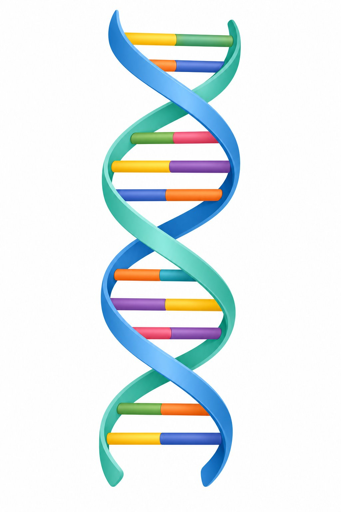
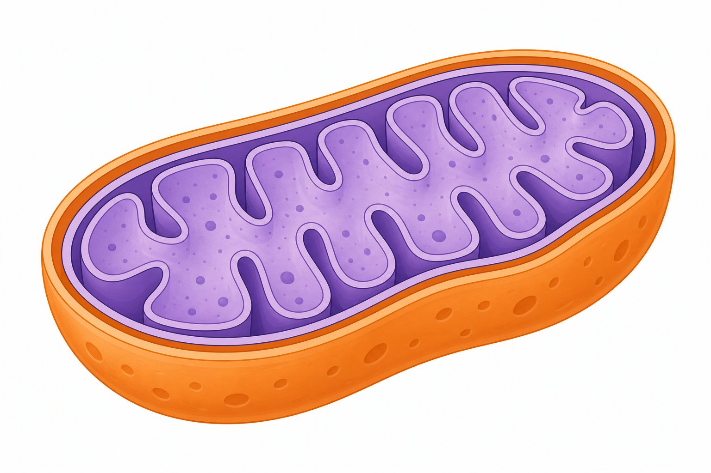
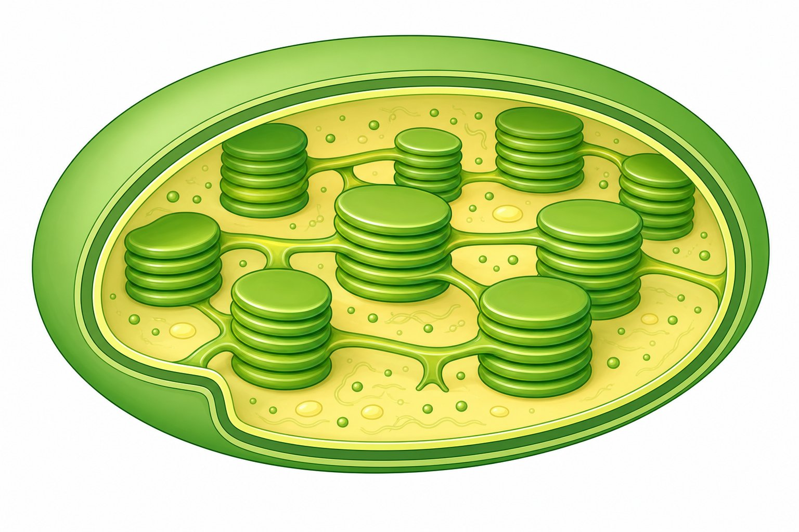
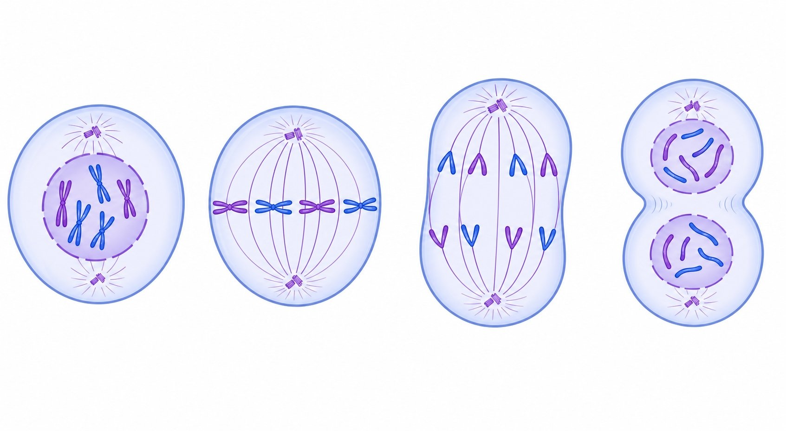
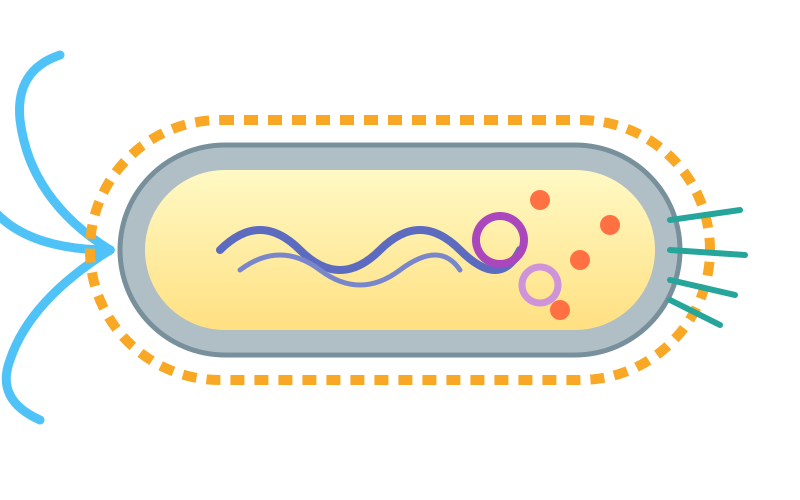
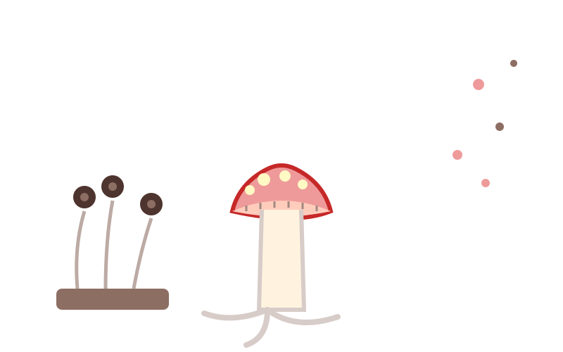
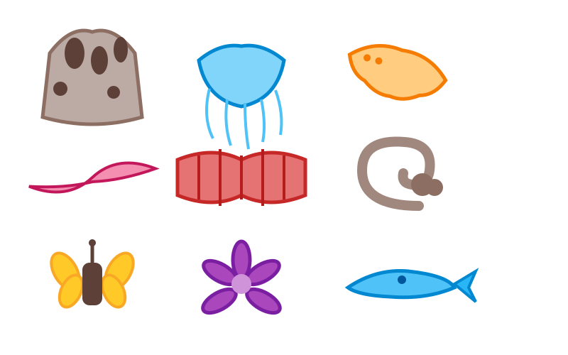
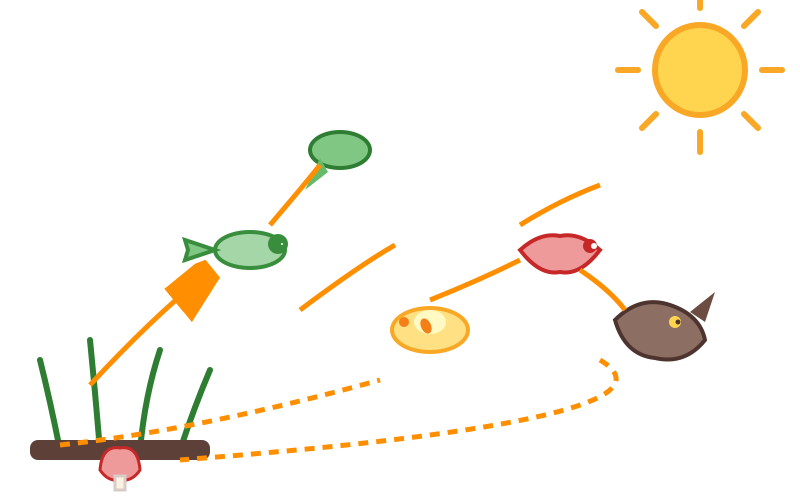

13 trilhas de estudo
Capítulos Disponíveis

A Descoberta da Vida Microscópica
Viaje para Londres em 1665 e descubra como Robert Hooke revelou o mundo das células pela primeira vez.

Composição Química da Vida
Entenda as moléculas que formam todos os seres vivos: água, sais minerais, carboidratos, lipídios e proteínas.

DNA e Genética
Descubra o código da vida: dupla hélice, replicação, síntese de proteínas e as leis de Mendel.

Citologia
Explore o interior da célula, as organelas, o transporte pela membrana e a célula vegetal em 3D.

Metabolismo Energético
Aprenda como as células produzem energia através da respiração celular, fermentação e fotossíntese.

Divisão Celular
Entenda a mitose e a meiose com um modelo 3D interativo das fases da divisão celular.

Histologia Animal
Conheça os tecidos epitelial, conjuntivo, muscular e nervoso — e um neurônio 3D gigante.

Botânica
Explore o reino vegetal, dos musgos às angiospermas — com a anatomia da flor em 3D.

Reino Monera
Descubra o mundo das bactérias e cianobactérias, suas estruturas e importância ecológica.

Reino Protista
Conheça protozoários e algas: ameba, paramécio, malária e doença de Chagas.

Reino Fungi
Explore o reino dos fungos: cogumelos, leveduras, micoses e sua função de decompositores.

Reino Animalia
Uma jornada pelos filos do reino animal, dos poríferos aos mamíferos — com água-viva 3D.

Ecologia
Entenda cadeias alimentares, ciclos biogeoquímicos, relações ecológicas e os biomas do Brasil.